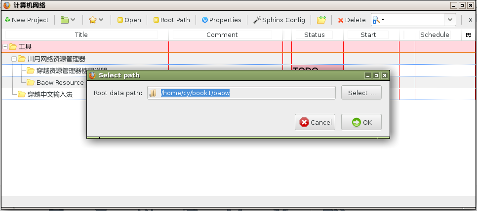
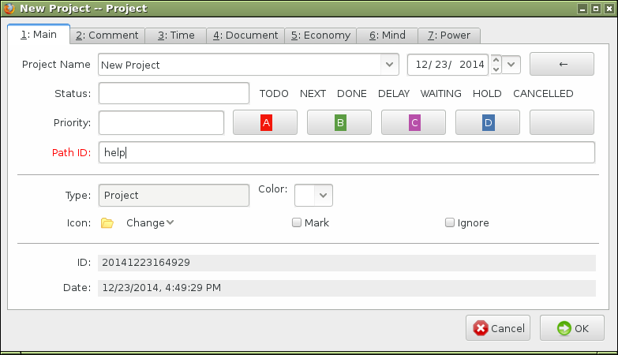
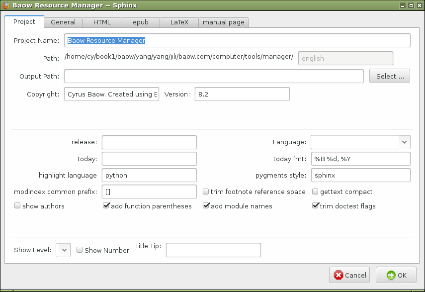

You will get the full power of Baow with project management.
Click the Root Path button in the project management window, you should select a root path where to save your data and pages. You can select a path by click the Select button.

Click the New Project button in the project management window, and input project information.

Project Name and Path ID are required. You can leave next options blank.
This is an optional step. You should continue to click the Sphinx Config button if you want to generate Sphinx document pages.
You should read Sphinx documents carefully when inputing the next options. They are plain texts, some of them with Python language format, check Sphinx document, please.
Finally, you should click the Open button to use one project settings and open data management window.
Shortcuts in project management window as follows:
| F11 | set start time |
| F12 | set end time |
| Ctrl-l | locate source item from search results |
| Alt-f | scroll down 16 lines |
| Alt-v | scroll up 16 lines |
| Alt-c | open data management window |
| Alt-x | copy project link |
| Alt-m | open previous project |
| Alt-o | search |
| Alt-u | focus tree |
| Number | record jump step |
| Space | toggle folder open/close state |
| a | add to favorites |
| Shift-d | to delete |
| Delete | delete an item |
| q | locate an item from searh results |
| Shift-m | open/close all items |
| n | new project |
| Shift-n | new sub project |
| b | back |
| Shift-f | forward |
| < | to top |
| > | to bottom |
| j | focus down a line |
| Shift-j | to bottom |
| Shift-l | show current line |
| k | focus up a line |
| K | to top |
| , | focus up item in same level |
| . | focus down item in same level |
| u | focus parent item |
| h | close folder |
| Shift-h | close all sub folder |
| o | open this project |
| l | open sub folder |
| c | sphinx config |
| Shift-v | show down more |
| Double click | open this project and close window |
| Right click | delete an item in favorites or history list from pop up menu. |
 , you will see the project management window as follows:
, you will see the project management window as follows: